- 前端发展历史
- Webpack 的诞生
- It’s a funny story how I started with Webpack. Before getting addicted to JavaScript, I also developed in Java. I tried GWT (Google Web Toolkit) in that time. GWT is a Java-to-JavaScript Compiler, which has a great feature: code-splitting. I liked this feature and missed it in existing JavaScript tooling. I made a pull request to an existing module bundler, but it did not go through. Webpack was born.
- 为什么需要构建？
- 1.开发分工变化 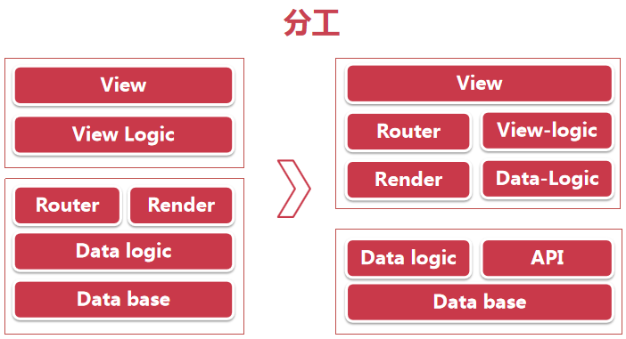
- 2.框架的变化 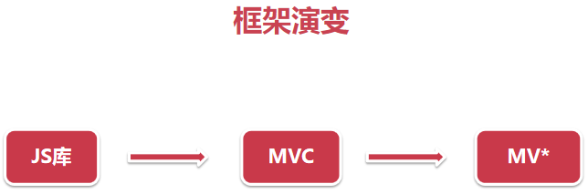
- 3.语言的变化 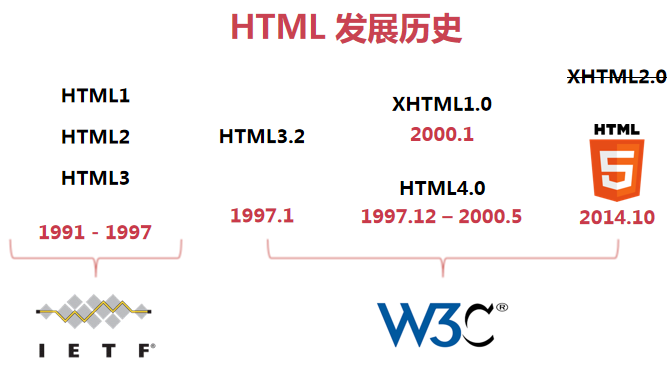 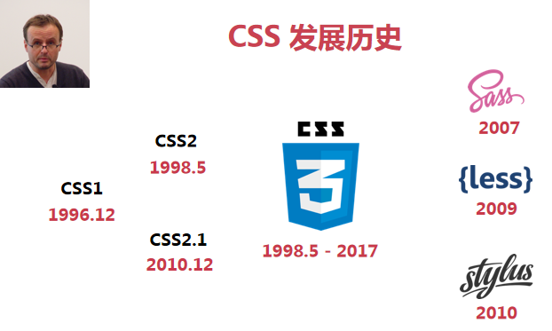

- 4.环境的变化
- 5.社区的变化
- 6.工具的变化 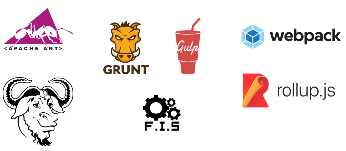
- 为啥前端需要构建？
- 开发复杂化
- 框架去中心化
- 语言编译化
- 开发模块化
- Webpack 的诞生
- 模块化思想
- js模块化
- 命名空间 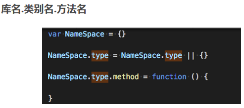
- COMMONJS
-
Modules/1.1.1
一个文件为一个模块
通过 module.exports 暴露模块接口,为一个对象
通过 require 引入模块
同步执行
http://wiki.commonjs.org/wiki/Modules/1.1.1
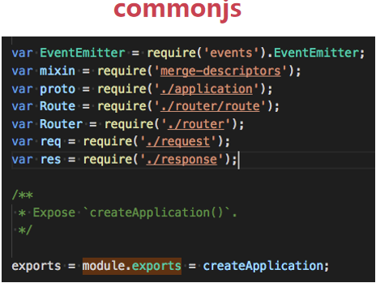
-
- AMD
-
Async Module Definition
使用 define 定义模块
使用 require 加载模块
代表：RequireJS
依赖JS会自动、异步加载
依赖前置，提前执行(看network中js文件加载情况来熟知)
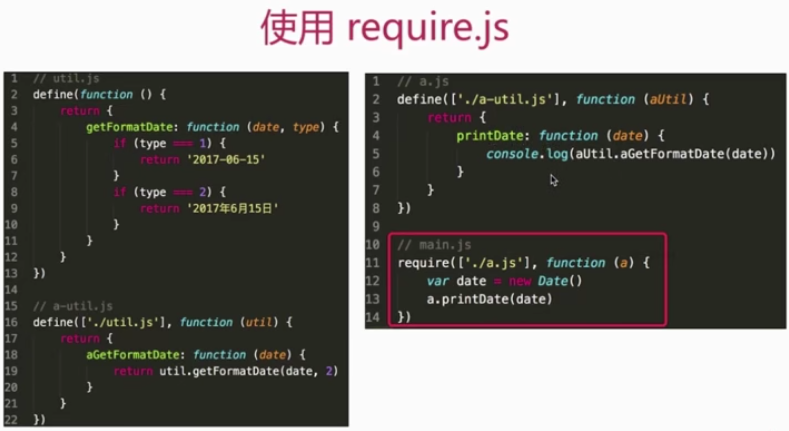 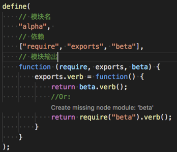 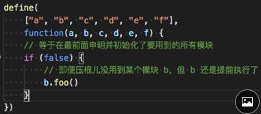
使用："script src="require.min.js" data-main="./main.js">"/script"
-->https://github.com/amdjs/amdjs-api/wiki/AMD
-
- CMD
- Common Module Definition
- 一个文件为一个模块
- 使用define 来定义一个模块
- 使用require 来加载一个模块
- 代表：SeaJS
- 尽可能懒执行 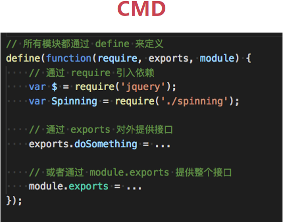
- https://github.com/cmdjs/specification/blob/master/draft/module.md
- UMD
- Universal Module Definition
-
步骤
判断是否支持 AMD
判断是否支持 CommonJS
如果都没有 使用全局变量
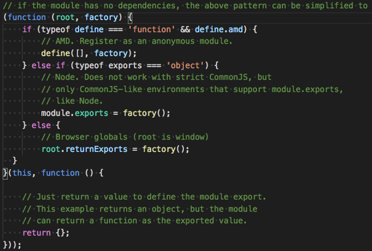
- ES6 module
-
一个文件一个模块
export / import
import()
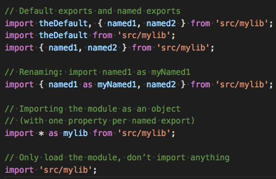 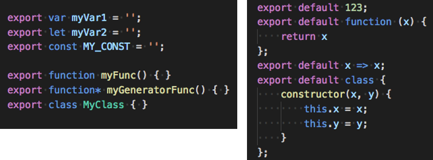
-
- Webpack支持
- AMD (RequireJS)
- ES Modules (推荐的)
- CommonJS
- CSS 模块化
- js模块化
- 官网：https://webpack.js.org/
- 功能变化Github：https://github.com/webpack/webpack
- 环境准备：命令行工具 / Node + Npm / Webpack (安装：npm install webpack -g)
- 常见名词：Chunk(代码块) Bundle(一捆，已经打包过的文件) Module(通过loader处理后的文件，如图片、css等)
- 核心概念：Entry Output Loaders Plugins
- Entry
-
代码的入口 / 打包的入口 / 单个或多个
module.exports = { entry:'index.js' } module.exports = { entry:['index.js','vendor.js'] } module.exports = { entry:{ index:'index.js', vendor:'vendor.js' } }
-
- Output
-
打包成的文件(bundle) / 一个或多个 / 自定义规则 /配合CDN
module.exports = { output:{ //filename:'index.min.js' filename:'[name].min.[hash:5].js' } }
-
- Loaders
-
处理文件 / 转化为模块
module.exports = { module:{ rules:[ { test:/\.css$/, use:'css-loader' } ] } }常用 Loader
编译相关: babel-loader、ts-loader
样式相关: style-loader、css-loader、less-loader、postcss-loader
文件相关: file-loader、url-loader
-
- Plugins
- 参与打包整个过程
- 打包优化和压缩
- 配置编译时的变量
-
module.exports = { plugins:[ ..... ] } -
常用 Plugins
优化相关:CommonsChunkPlugin 、 UglifyjsWebpackPlugin
功能相关:ExtractTextWebpackPlugin 、HtmlWebpackPlugin、HotModuleReplacementPlugin、CopyWebpackPlugin